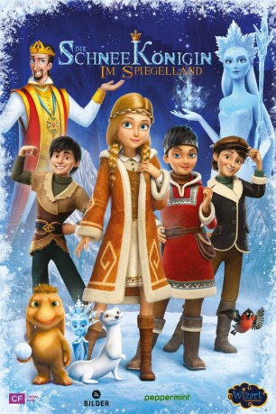

#12264 Die Schneekönigin 4: Im Spiegelland
Alternativ: The Snow Queen: Mirrorlands (Englischer Titel)
 
 IMDB-Wertung: 5.5 / 10
IMDB-Wertung: 5.5 / 10  Metascore: 0
Metascore: 0 
König Harald verbietet jegliche Magie, da er durch die bösen Taten der Schneekönigin fast seine Familie verloren hat. Dagegen kann nur Gerda etwas ausrichten, die anstelle von Magie auf ihre größte Kraft der Freundlichkeit setzt und sich in ein gefährliches Abenteuer stürzt, das sie mit Trollen, Piraten und der Schneekönigin selbst zusammenführt.
Jahr: 2018
Dauer: 87 Minuten
FSK: 6
Land: Russland Studio: Peppermint EnterprisesTonspuren:
Untertitel:
Auflösung: 1080p (1920x808) Größe: 3747 MB
Genre: Komödie, Abenteuer, Fantasy, Animation/Trick, Familie
Regisseur: Robert Lence, Aleksey Tsitsilin
Drehbuch: Andrey Korenkov, Robert Lence, Vladimir Nikolaev, Aleksey Tsitsilin, Aleksey Zamyslov
Soundtrack: Fabrizio Mancinelli
Darsteller:
Datei: Gemischt-01+AnimeG:\Download\Schneekönigin 4 Im Spiegelland, Die (2018, FSK6, 1920x808).mkv seit 12.01.2020
 Es gibt insgesamt 16 Filme in der Gruppe 'Gemischt-01+AnimeG:\Download'
Es gibt insgesamt 16 Filme in der Gruppe 'Gemischt-01+AnimeG:\Download'